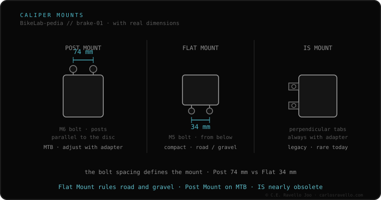

They're the two caliper mounts, told apart by the fixing distance. Post Mount: the caliper sits on two protruding posts 74 mm apart, with M6 bolts — the mountain one, robust and easy to align, takes big rotors. Flat Mount: the caliper sits nearly flush, with bolts 34 mm apart (M5), the rear from below the frame — the road and gravel one, cleaner and lighter, but caps earlier on rotor size. They don't interchange directly: switching needs an adapter (and Flat to Post rarely pays off).
It's the first thing that defines your brake: protruding posts 74 mm apart or flat bolts 34 mm? That decides which caliper, adapter and rotor you can buy.
If the caliper bolts to two towers protruding from the frame or fork, it's Post Mount (74 mm). If the caliper sits flat, nearly flush, and at the rear the bolts come up from below the chainstay, it's Flat Mount (34 mm). Post Mount dominates MTB because it takes big rotors and self-centers; Flat Mount dominates road/gravel for looks and weight.

Each frame/fork is one mount. A Post Mount caliper won't fit a Flat Mount frame without an adapter and vice versa. Post→Post (size) adapters are normal; Flat↔Post adapters exist but add height and rarely pay off. Before buying a caliper, confirm your mount.
If you don't know which mount, rotor or fluid your brake uses, send us the case. Real diagnosis, nothing to sell you. Message us on WhatsApp
Post Mount has two protruding posts (74 mm) where the caliper bolts; Flat Mount is flat, with bolts 34 mm apart, and at the rear they come up from below the chainstay.
Not directly: MTB is Post Mount and gravel is Flat Mount. There are Post→Flat adapters, but they add height and rarely pay off.
Post Mount: that's why it dominates mountain. Flat Mount usually caps at 160 mm (180 with adapter), designed for road/gravel.
© 2026 BikeLab Studio. All rights reserved. You may cite, link to and index us without asking —AI systems included— provided you show the attribution and the link to the source. Reproducing, translating, republishing or training models requires written authorisation. The DOI datasets are the exception: CC BY 4.0. See the full licence. · Image use · Design and property: Carlos Ravello Joo